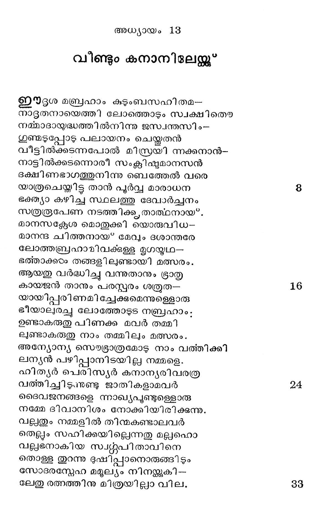
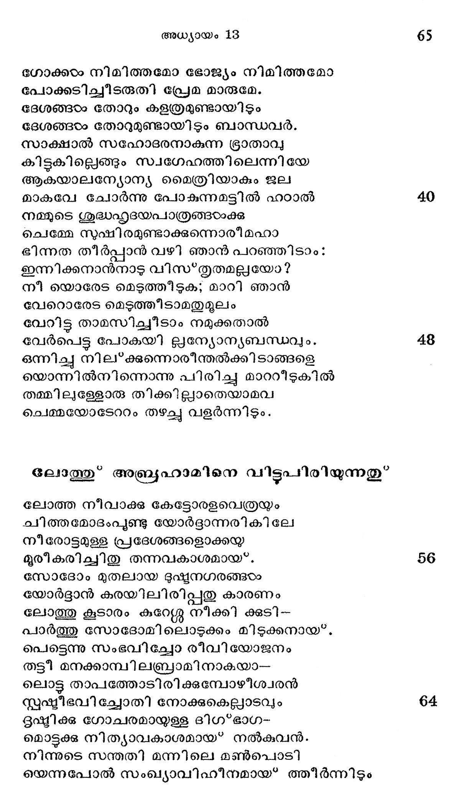

വീണ്ടും കനാനിലേയ്ക്കു*
ഈദൃശ മബ്രഹാം കുടുംബസഹിതമ--
നാദുതനായെത്തി ലോത്തൊടും സ്വക്ഷിതൌ
നമ്മാദായ്ദദ്ധത്തില്നിന്നു ജസ്വന്തസിം--
ഗുണ്ടുപ്പോഴു പലായനം ചെയ്തതന്
വീട്ടില്ക്കടന്നപോല് മിസ്രയി ന്നക്കനാന്-
നാട്ടില്ക്കടന്നൊരീ സംക്സിഷുമാനസന്
ഭക്ഷിണഭാഗത്തുനിന്നു ബെത്തേല് വരെ
യാത്രചെയ്തിട്ട താന് പൂര്വ്വ മാരാധന
ഭക്ത്യാ കഴിച്ച സ്ഥലത്തു ദേവാര്ച്ചനം
സത്രരൂപേണ നടത്തിക്ക താത്ഥനായ്*.
മാനസക്ദേശ മൊതുക്കി യൊരുവിധ--
മാനന്ദ ചിത്തനായ” മേവും ദശാന്തരേ
ലോത്തബ്രഹാമിവക്കള്ള മൃഗയ്യഥ--
ഭത്താക്കരം തങ്ങളിലുണ്ടായി മത്സരം.
ആയതു വര്ദ്ധിച്ചു വന്നുതാനും ഭ്രാതൃ
കായജന് താനും പരസ്പരം ശത്രുത--
യായിപ്പരിണമു ച്ചേക്കുമെന്നുള്ളൊരു
ഭീയാലുരച്ചു ലോത്തോടുട നബ്രഹാം;
ഉണ്ടാകരുതു പിണക്ക മവര് തമ്മി
ലുണ്ടാകരുതു നാം തമ്മിലും മത്സരം.
അന്യോന്യ സെഭ്രോത്രമോടു നാം വത്തിക്കി
ലന്യന് പഴിപ്പാനിടയില്ല നമ്മളെ.
ഹിത്യര് പെരിസ്യർ കനാന്യരിവരത്ര
വത്തിച്ചിടനണ്ടു ജാതികളാമവര്
ദൈവജനങ്ങളെ ന്നാഖ്യപുണ്ടുള്ളൊരു
നമ്മേ ദിവാനിശം നോക്കിയിരിക്കുന്നു.
വല്പതും നമ്മളില് തിന്മകണ്ടാലവര്
തെല്ലും സഹിക്കയില്ലെന്നതു മല്ലഹൊ
വല്ലഭനാകിയ സ്വ്ത്പിതാവിനെ
തൊള്ള തുറന്നു ഭൂഷിപ്പാനൊരുങ്ങിടും
സോദരന്റേഹ മമൂല്യം നിനയ്ക്കുകി --
ലേതു രത്സത്തിനു മിത്രയില്ലാവില.

ഭഗാക്കടം നിമിത്തമോ ഭോജ്യം നിമിത്തമോ
പോക്കടിച്ചീടരുതി പ്രേമ മാരുമേ.
ദേശങ്ങഠം തോറും കളത്രമുണ്ടായിടും
ദേശങ്ങഠം തോറുമുണ്ടായിടും ബാന്ധവര്.
സാക്ഷാല് സഹോദരനാകുന്ന ഭ്രാതാവു
കിട്ടുകില്ലെങ്ങം സ്വഗേഹത്തിലെന്നിയേ
ആകയാലന്റയോന്യ മൈത്രിയാകും ജല
മാകവേ ചോര്ന്നു പോകുന്നമട്ടിൽ ഹഠാൽ
നമുടെ ശുദ്ധഹൃദയപാത്രങ്ങഠംക്കു
ചെമ്മേ നുഷിരമുണ്ടാക്കുന്നൊരീമഹാ
ഭിന്നത തീര്പ്പാന് വഴി ഞാന് പറഞ്ഞിടാം?:
ഇന്നിക്കനാന്നാടു വിസ*തൃതമല്ലയോ?
നീ യൊരേട മെടുത്തി ടുക; മാറി ഞാന്
വേറരൊരേട മെടുത്തീടാമതുമൂലം
വേറിട്ട താമസിച്ചീടാം നമുക്കതാല്
വേര്പെട്ട പോകയി ല്ലന്യോന്യബന്ധവും.
ഒന്നിച്ച നില*ക്കുന്നൊരീന്തല്ക്കിടാങ്ങളെ
യൊന്നില്നിന്നൊന്നു പിരിച്ചു മാററീട്കില്
തമ്മിലുള്ളോരു തിക്കില്ലാതെയാമവ
ചെമ്മയോടേററം തച്ചു വളര്ന്നിടും.
ലോത്തു” അബ്രഹാമിനെ വിട്ടപീരിയുന്നുതു*
ലോത്ത നീവാക്കു കേട്ടോരളവെത്രയും
ചിത്തമോദംപൂണ്ടു യോര്ട്ദാന്നരികിലേ
നീരോട്ടമുള്ള പ്രദേശങ്ങളൊക്കയ
മുരീകരിച്ചിതു തന്നവകാശമായ്.
സോദോം മുതലായ ദുഷ്ടയനഗരങ്ങടഠം
യോര്ദ്ദാന് കരയിലിരിപ്പതു കാരണം
ലോത്തു കൂടാരം കുറ്റേശശലേ നീക്കി ക്കുടി--
പാര്ത്തു സോദോമി ലൊടുക്കം മിടുക്കനായ.
പെടെെന്നു സംഭവിച്ചോ രീവിയോജനം
തട്ടീ മനക്കാമ്പിലബ്രാമിനാകയാ--
ലൊട്ട താപത്തോടിരിക്കുമ്പോഴീശ്വരന്
സ്പഷ്മീഭവി ച്ചോതി നോക്കുകെല്ലാടവും
ഭൂഷ്മിക്കു ഗോചരമായുള്ള ദിഗ*ഭാഗ-
മൊട്ടക്ക നിത്യാവകാശമായ* നല്കുവന്.
നിന്നുടെ സന്തതി മന്നിലെ മൺപൊടി
യെന്നപോല് സംഖ്യാവിഹീനമായ* ത്തീര്ന്നിടം

അബ്രാമിതു കേട്ടു വെക്കം കുടി നീങ്ങി
ഹെബ്രോനിലാക്കി നിവാസം സരഭസം.
മരമ്യിന്തോപ്പില് വസിച്ചു യഹോവണ്ക്കു
ന്രമുബദ്ധ്യാ യജ്ഞപീഠം ചമചിുിതു.